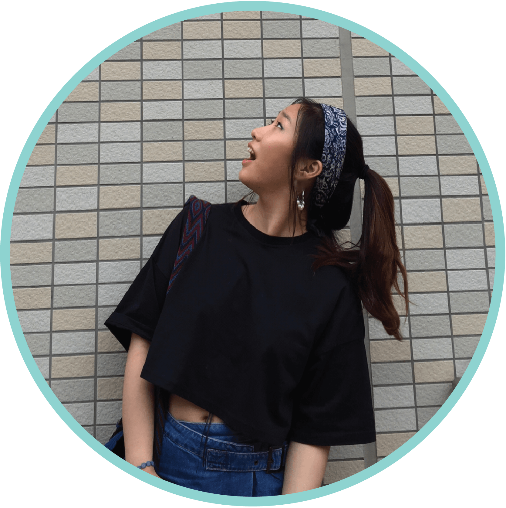

Soh Heum is a UX designer from South Korea. She studied information and interaction design in Yonsei University.
She aims to be a designer who can redefine relationships between user and service in order to influence our society.
She is curious about experimenting with the most recent technology, especially about how it can benefit users.
This website is also one of the outcomes of her experiments. Welcome and feel free to explore them!!